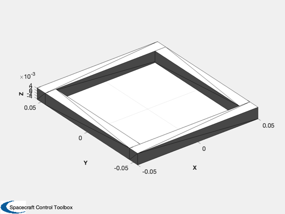

Design and draw an air core magnetic torquer
The design function performs an optimization to minimize the weighted cost of power consumption and mass. ------------------------------------------------------------------------- See also AirCoreMagneticTorquerDesign, AirCoreTorquerModel -------------------------------------------------------------------------
%-------------------------------------------------------------------------- % Copyright (c) 2014 Princeton Satellite Systems, Inc. % All rights reserved. %-------------------------------------------------------------------------- d = struct; % Wire comes in specific gauges, which you specify here. % Wire gauge 0000 is -3. d.aWG = 32; % Desired dipole (ATM^2) d.dipole = 1; % Conductor density (kg/m^3) d.densityConductor = 8960; % Conductivity (S/m) d.conductivity = 59.6e6; % Dimensions of the coil (m) d.dim = [0.1 0.1]; % Weight for the mass optimization (W/kg) d.alpha = 1e-7; % Design the minimum mass torquer d = AirCoreMagneticTorquerDesign( d ) % Visualize the model AirCoreTorquerModel( d.nTurns, d.rWire, d.dim ); %-------------------------------------- % $Id: aeb2e518af38e6d35157f92b5387d8425bf4f2c9 $
d =
struct with fields:
aWG: 32
dipole: 1
densityConductor: 8960
conductivity: 59600000
dim: [0.1 0.1]
alpha: 1e-07
rWire: 0.00010097
rhoWire: 0.52388
v: 20.955
nTurns: 2419
lWire: 967.6
mWire: 0.27767
power: 0.86627
i: 0.041339
R: 506.9
